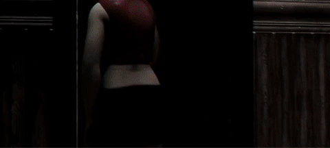
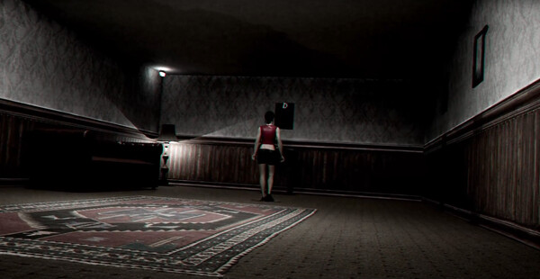
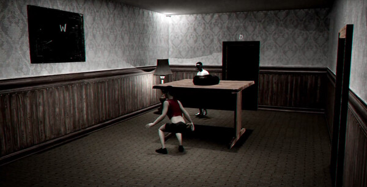

The Inner Demons (solo project)
For The Inner Demons, I wanted to blur the lines between video games and cinema. By using a unique room-based control scheme, my camera system can film the game with cinematic angles. The result is a tense movie-like experience that feels distinct from any other horror game.

Designing a Cinematic Game


I love movies and have always felt that games that try to emulate them tend to fall slightly short. As an experiment, I wanted to create a cinematic camera in a game that dynamically framed the action. This required designing an entirely new movement system, as typical third-person controls or tank controls would be confusing with a frequently cutting camera. To solve this, I tied movement to key points around the room and displayed these points on an in-game compass. When put together with a stalking enemy character who seeks out the player in an interconnected level, The Inner Demons delivers a unique experience that feels like an old horror movie.
Found Footage Horror Post Process
For my cinematic horror game The Inner Demons, I created a found footage post process material. This shader was more of a color grading exercise than a technical shader, but it taught me a lot about the Unreal camera system. A mix of value manipulation through LUTs, film grain, and chromatic aberration gave the perfect blend for a creepy old school found footage movie.